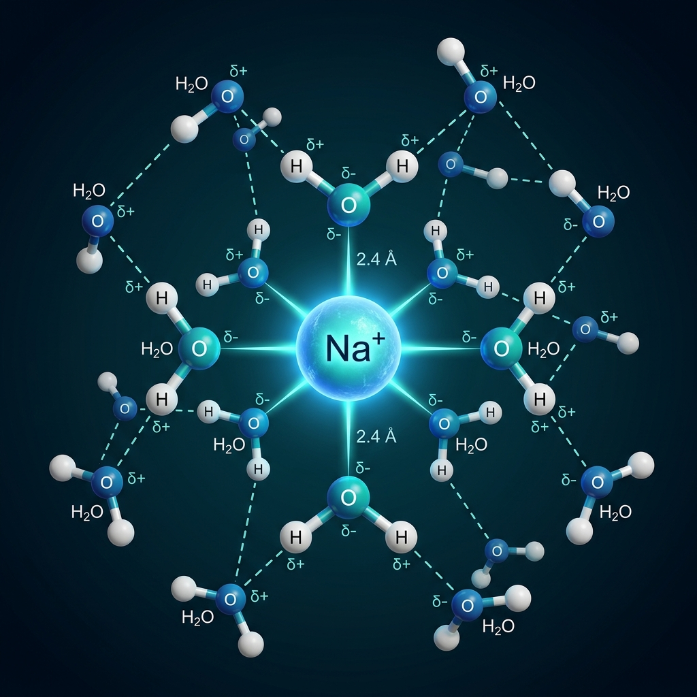
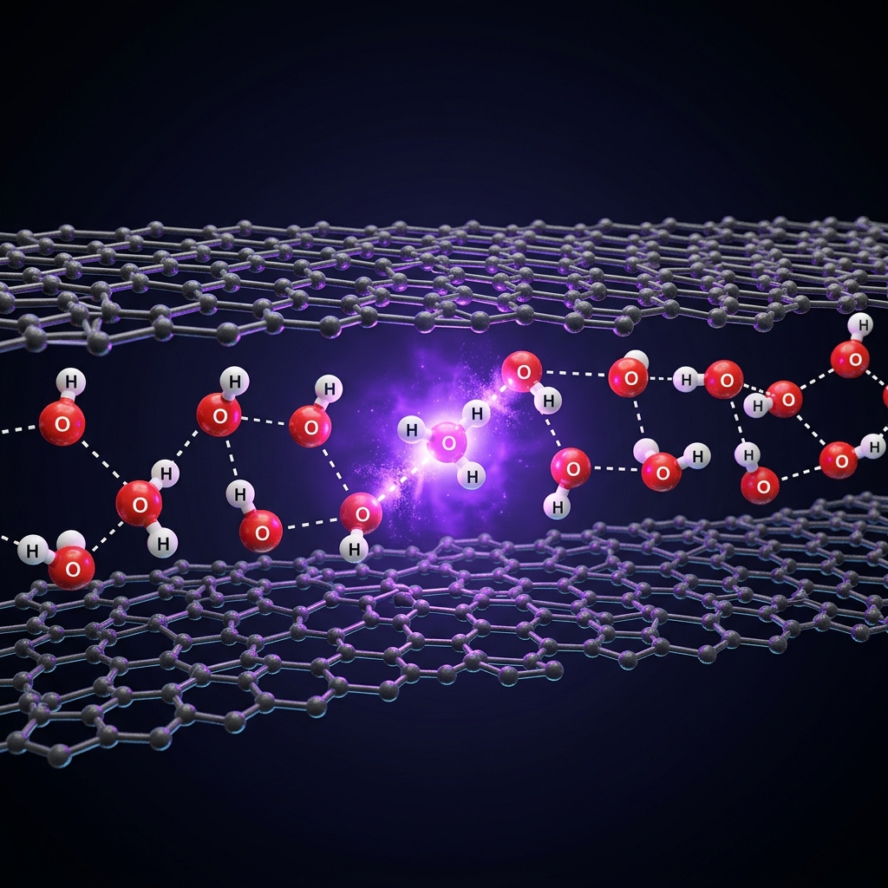
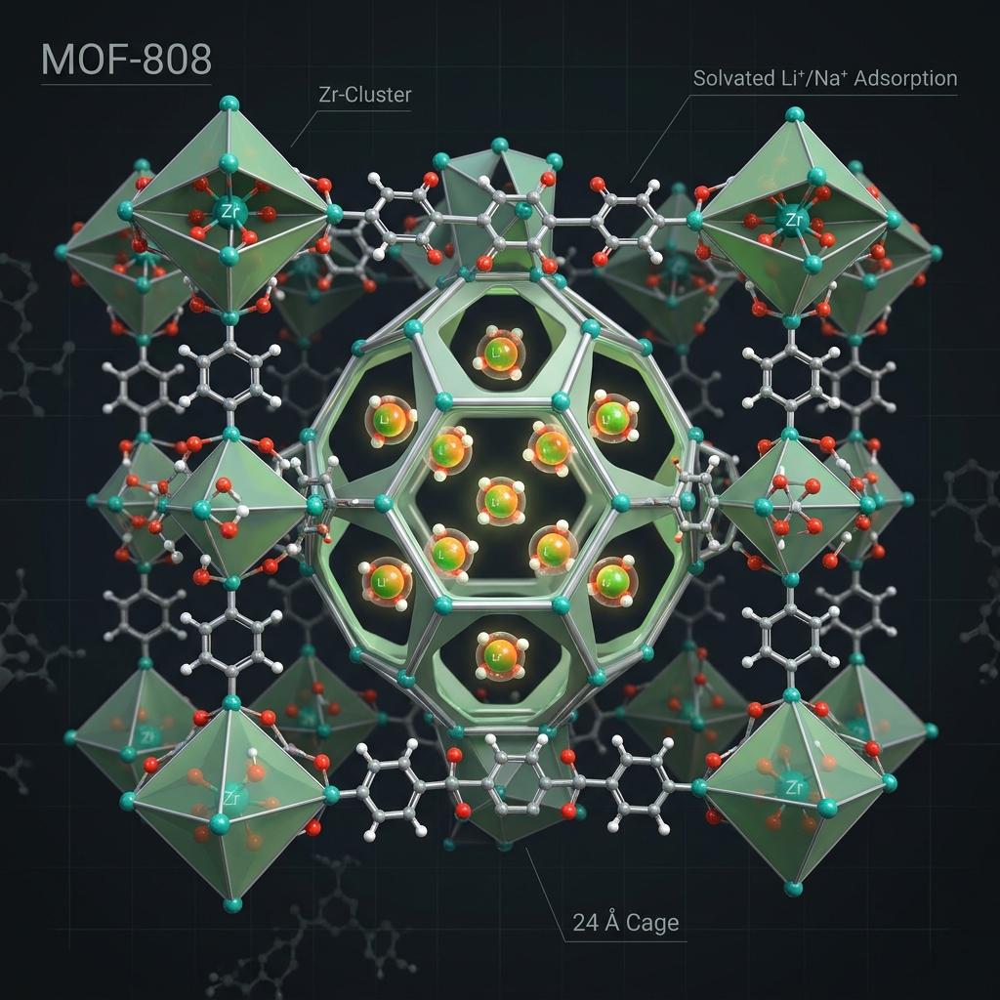

Hydration
Free energies of ions in water
Staged alchemical free-energy calculations for alkali metal and halide ions using MB-pol water, MB-nrg ion potentials, and many-body electrostatics.
Research
My projects use molecular dynamics, free-energy methods, and data-driven many-body potentials to connect molecular structure with thermodynamics, transport, and reactivity.

Hydration
Staged alchemical free-energy calculations for alkali metal and halide ions using MB-pol water, MB-nrg ion potentials, and many-body electrostatics.

Interfaces
Simulations of how sub-nanometer confinement, interfacial chemistry, and framework flexibility modulate acid-base equilibria and proton-transfer pathways.

Materials
Enhanced sampling and thermodynamic modeling of alkali metal ion adsorption from aqueous solution into metal-organic frameworks.